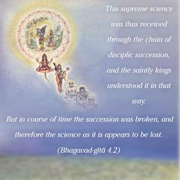
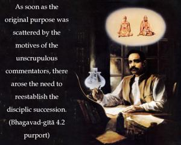
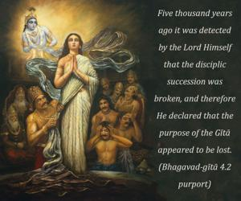

This supreme science was thus received through the chain of disciplic succession, and the saintly kings understood it in that way. But in course of time the succession was broken, and therefore the science as it is appears to be lost.



It is clearly stated that the Gītā was especially meant for the saintly kings because they were to execute its purpose in ruling over the citizens. Certainly Bhagavad-gītā was never meant for the demonic persons, who would dissipate its value for no one’s benefit and would devise all types of interpretations according to personal whims. As soon as the original purpose was scattered by the motives of the unscrupulous commentators, there arose the need to reestablish the disciplic succession. Five thousand years ago it was detected by the Lord Himself that the disciplic succession was broken, and therefore He declared that the purpose of the Gītā appeared to be lost. In the same way, at the present moment also there are so many editions of the Gītā (especially in English), but almost all of them are not according to authorized disciplic succession. There are innumerable interpretations rendered by different mundane scholars, but almost all of them do not accept the Supreme Personality of Godhead, Kṛṣṇa, although they make a good business on the words of Śrī Kṛṣṇa. This spirit is demonic, because demons do not believe in God but simply enjoy the property of the Supreme. Since there is a great need of an edition of the Gītā in English, as it is received by the paramparā (disciplic succession) system, an attempt is made herewith to fulfill this great want. Bhagavad-gītā – accepted as it is – is a great boon to humanity; but if it is accepted as a treatise of philosophical speculations, it is simply a waste of time.